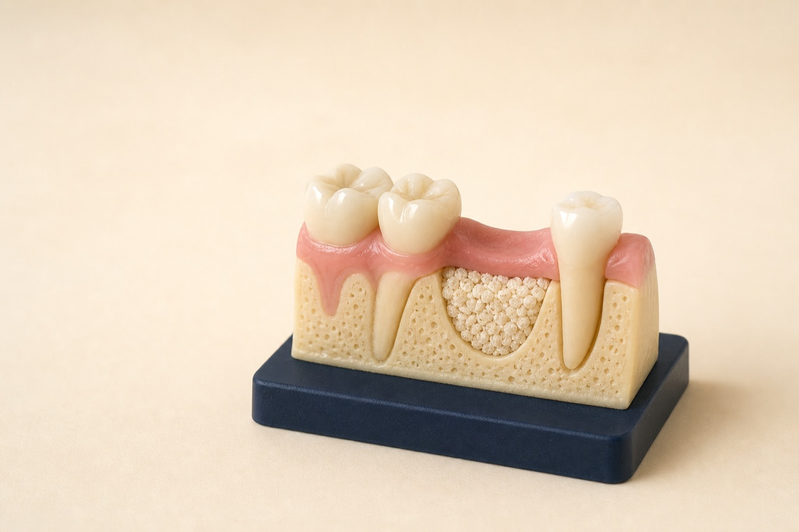

Assess
Review the site clinically and with appropriate imaging.
Dental bone grafting in Renton, WA
Bone naturally changes after tooth loss. Grafting can help preserve an extraction site or rebuild an area when there is not enough bone to support the implant position your restoration needs.

Your treatment path
Graft size and timing vary, but every plan follows the same diagnostic logic.
Review the site clinically and with appropriate imaging.
Select the material, technique, and timing that fit the defect.
Place and protect the graft while supporting comfortable healing.
Confirm healing before moving to implant or restorative treatment.
Bone grafting outcomes and timing vary. Smoking, uncontrolled health conditions, infection, and oral hygiene can affect healing.
Why grafting may be recommended
Grafting is not automatically needed for every extraction or implant. We recommend it only when it meaningfully supports the restorative goal.
Graft material may help limit bone collapse after a tooth is removed.
A deficient ridge may need additional width or height before implant placement.
Bone and gum contours help an implant restoration look natural, especially near the smile line.
What we evaluate
We evaluate the future restoration, implant position, gum contours, and nearby anatomy before deciding on the graft type and timing.
Bone grafting FAQ
A graft may preserve bone after an extraction or rebuild an area that lacks enough support for a planned dental implant.
Sometimes. The decision depends on the size and location of the defect and whether the implant can achieve adequate stability.
Healing varies by graft size, site, health, and treatment plan. Many grafts need several months before the next stage.
It may be processed donor, animal-derived, synthetic, or your own bone. The recommended material depends on the procedure.
A focused evaluation can clarify whether grafting is needed and when it should happen.